'data.frame': 11224049 obs. of 14 variables:
$ time : num 0 0.002 0.004 0.006 0.008 0.01 0.012 0.014 0.016 0.018 ...
$ torque_x : num 0.133 0.135 0.135 0.136 0.136 ...
$ torque_y : num -0.0461 -0.0461 -0.0487 -0.0474 -0.05 ...
$ torque_z : num 3.21 3.2 3.2 3.19 3.19 ...
$ torque_spindle : num 1.66 1.57 1.56 1.84 2.09 ...
$ position_x : num -580 NA NA NA -580 ...
$ position_y : num 204 204 204 204 204 ...
$ position_z : num -333 -333 -333 -333 -333 ...
$ position_spindle: num 14800 14826 14851 14876 14902 ...
$ Recording_flag : num 1 NA NA NA 1 NA NA NA 1 NA ...
$ file_path : chr "data/080807_WearMillingY_50_/_erste/Trace_0912_133347.csv" "data/080807_WearMillingY_50_/_erste/Trace_0912_133347.csv" "data/080807_WearMillingY_50_/_erste/Trace_0912_133347.csv" "data/080807_WearMillingY_50_/_erste/Trace_0912_133347.csv" ...
$ file_dir : chr "_erste" "_erste" "_erste" "_erste" ...
$ file_name : chr "Trace_0912_133347.csv" "Trace_0912_133347.csv" "Trace_0912_133347.csv" "Trace_0912_133347.csv" ...
$ time_increment : num 0 0.002 0.002 0.002 0.002 0.002 0.002 0.002 0.002 0.002 ...Data mining of CNC data for cutting tool wear identification
José Luis Pérez
Fernando Lango
Thomas M. Rudolf
Problem
Identify the characteristics and CNC signals that help to indicate tool wear. The general behaviour of wear is illustrated in fig. 1a. At the beginning, a new component (in this case a cutting tool) has a progressive, non linear phase, where the required current to cut increases slowly (1). The following phase has a linear behaviour with very little increase under the same cutting conditions (2) until it reaches the end of usage (3). In this last phase a very progressive increase of the required current can be noticed.
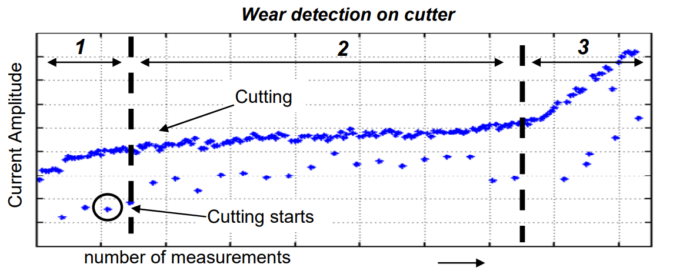fig. 1: Wear curve of a cutting tool
Problem
Fig.2 shows the measurement of tool wear taken form different stage of the cutting process with reference to removed volume.
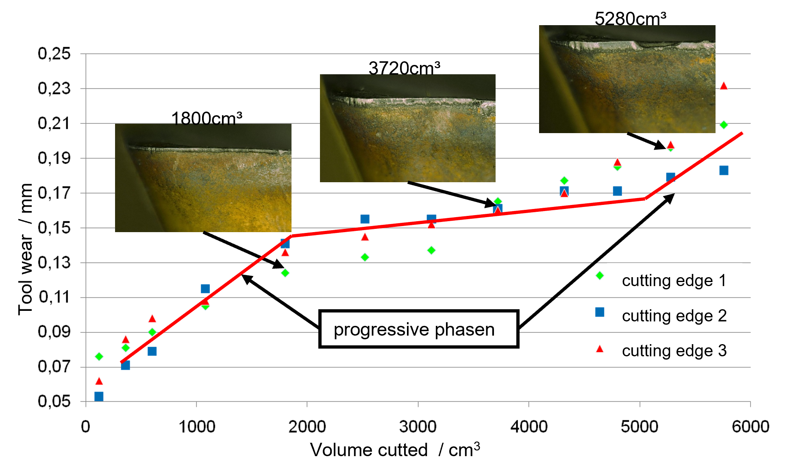fig. 2: measurements of tool wear per volume
The challenge is to identify which of the available signals are the best indicator to identify a worn tool.
Project Structure
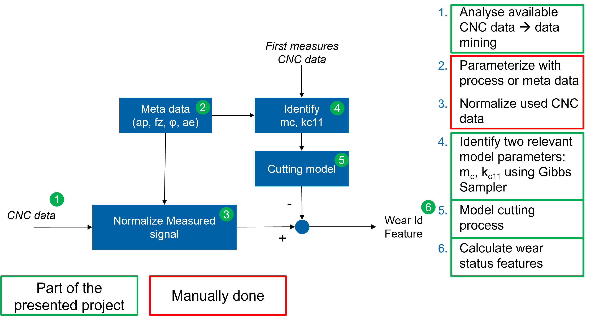Fig. 3: Project Structure
Model
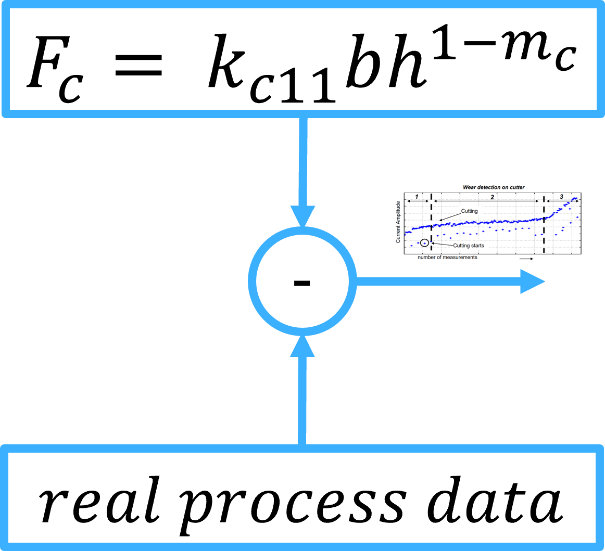
There are different models that describe the cutting force \(F_c\) and the resulting cutting torque \(M_c\) . The one used in this project is the model proposed by Otto Kienzle. It is based on the volume that each cutting tool removes from the material and two material parameters the specific cutting force \(k_{c1,1}\) [units \(N/m^2\)] and increasing value of the specific cutting force \(1-m_c\) . The parameters 𝑏 and ℎ are the geometric values of the removed material.
It is necessary to estimate accurately the value for both parameter to model relaiable the cutting torque, since small variations have a significant impact of the modelled signal.
Data structure
The available data are stored in folder with the structure illustrated in the fig. 5. The meta data of each measurement is stored in the folders name {cutting edge type}_{number of cutting edges}_{cutting depth in mm}_{tool diameter}_{% of tool diameter involved}_{process}
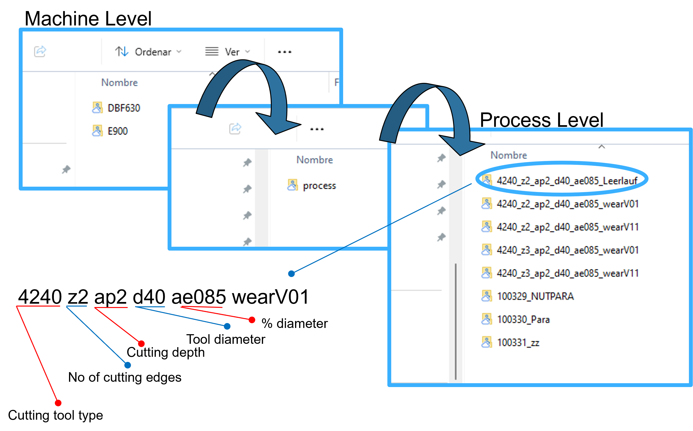fig. 5: Data structure
Each csv file is a time series with a duration of approximately \(10\) seconds and a sample time of \(2 ms\), leading to approximatly \(5,000\) entries per variable per csv file.
Selected data
The data we will use in the analysis has been limited to the WearMillingY_50 process for the CNC E900, as we determined that this process provides the best data quality.
In total, we have 2310 CSV files containing sensor signals. These files represent a total of 11224049 observations and 10 columns:
Missing data
For variables with 7,953 missing data points, the records will be removed, as they belong to a single erroneous CSV file.
Variables with a large amount of missing data will be removed.
| Missing | Percent | |
|---|---|---|
| time | 7953 | 0.07 |
| torque_x | 7953 | 0.07 |
| torque_y | 7953 | 0.07 |
| torque_z | 10091791 | 89.91 |
| torque_spindle | 7953 | 0.07 |
| position_x | 10920680 | 97.30 |
| position_y | 7953 | 0.07 |
| position_z | 7953 | 0.07 |
| position_spindle | 7953 | 0.07 |
| Recording_flag | 8398144 | 74.82 |
| file_path | 0 | 0.00 |
| file_dir | 0 | 0.00 |
| file_name | 0 | 0.00 |
| time_increment | 0 | 0.00 |
Data cleaning
Most of the folders with process data follow a structure like “Level_###,” where ### is a number. We identified some with a different structure, which correspond to temporary files, other processes, or instances where recording did not function correctly. Therefore, they will be removed.
| file_dir |
|---|
| _erste |
| _letzte |
| 00Used |
| Level_001_Test_alte_Schneiden |
| Level_081_ap4_wartet_nicht_auf_Tracer |
| Level_097_wartet_nicht_auf_Trace |
Resulting in a total of 5706528 observations.
Data cleaning
Additionally, we have created the variables level_time and total_time to track the total elapsed time of the process and for each level.
| file_dir | level_time | total_time |
|---|---|---|
| Level_002 | 0.000 | 0.000 |
| Level_002 | 0.002 | 0.002 |
| Level_002 | 0.004 | 0.004 |
| Level_002 | 0.006 | 0.006 |
| Level_002 | 0.008 | 0.008 |
| Level_002 | 0.010 | 0.010 |
| file_dir | level_time | total_time | |
|---|---|---|---|
| 5706523 | Level_118 | 95.030 | 11382.598 |
| 5706524 | Level_118 | 95.032 | 11382.600 |
| 5706525 | Level_118 | 95.034 | 11382.602 |
| 5706526 | Level_118 | 95.036 | 11382.604 |
| 5706527 | Level_118 | 95.038 | 11382.606 |
| 5706528 | Level_118 | 95.040 | 11382.608 |
Statistical summary
With our data cleaned, we can observe a statistical summary of the numerical variables.
| variable | mean | sd | p0 | p25 | p50 | p75 | p100 | hist |
|---|---|---|---|---|---|---|---|---|
| torque_x | 0.29 | 0.39 | -0.60 | 0.09 | 0.33 | 0.64 | 1.18 | ▅▂▇▇▂ |
| torque_y | 0.63 | 0.17 | -3.37 | 0.55 | 0.65 | 0.72 | 2.08 | ▁▁▁▇▁ |
| torque_spindle | 4.10 | 1.95 | -1.08 | 1.96 | 4.36 | 5.90 | 70.41 | ▇▁▁▁▁ |
| position_y | 308.54 | 44.86 | 204.31 | 270.26 | 308.74 | 347.16 | 385.53 | ▂▇▇▇▇ |
| position_z | -362.77 | 14.82 | -388.03 | -374.71 | -364.03 | -351.62 | -278.77 | ▇▇▂▁▁ |
| position_spindle | 1350185.30 | 860850.87 | 66.78 | 614733.77 | 1305938.38 | 1978761.34 | 4402826.50 | ▇▇▇▁▁ |
Correlations & PCA
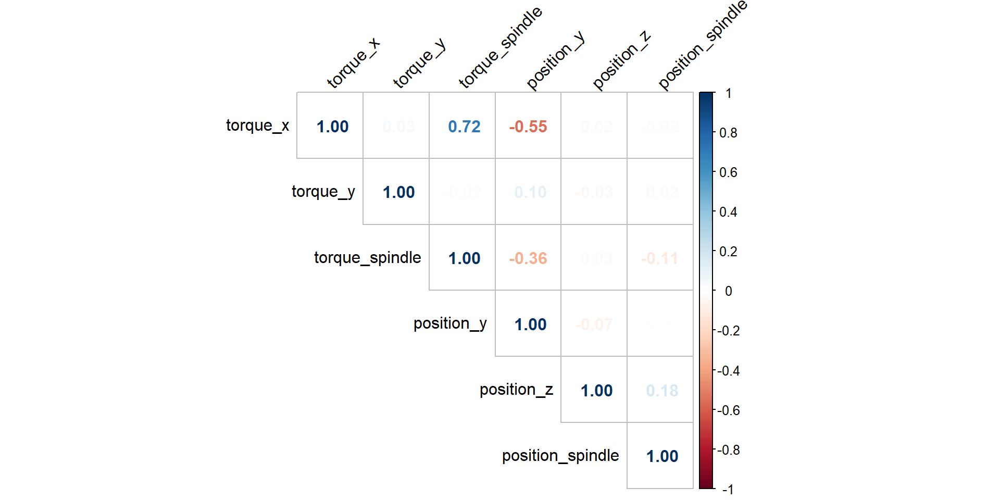

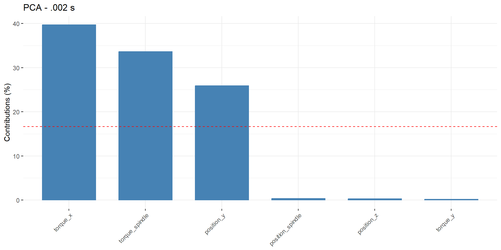
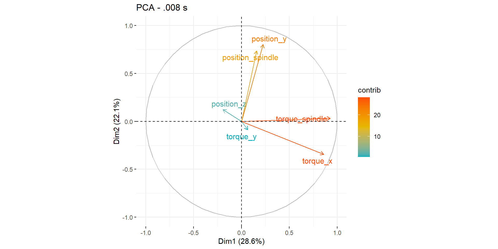
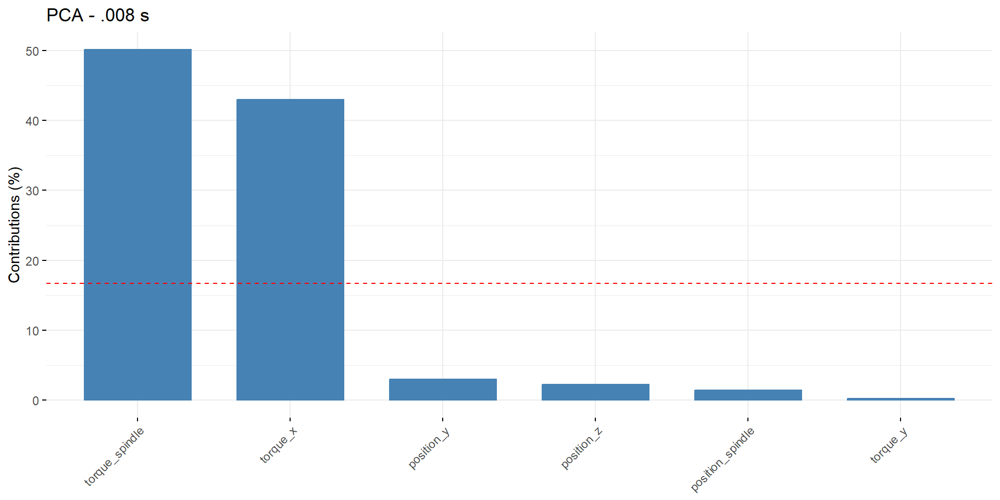
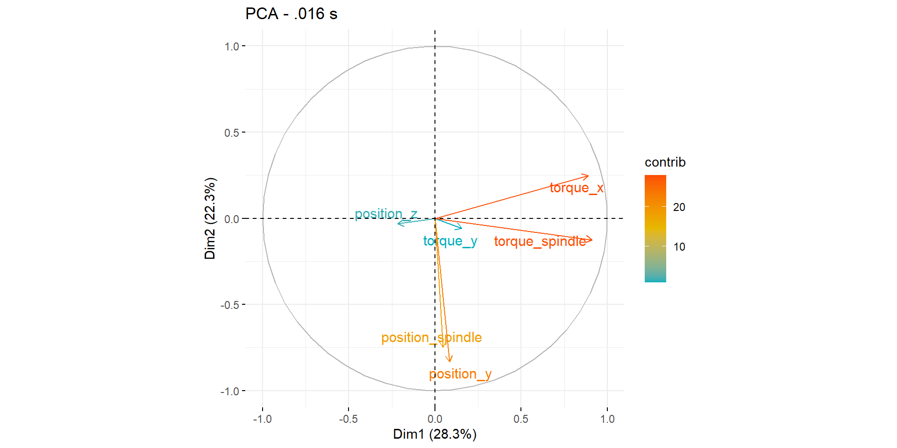
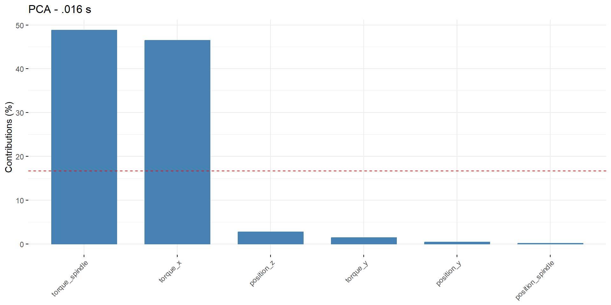
Signal processing on the current signals
In order to start analysing the most highly appreciated signals, some signal processing methods were conducted:
- Moving Standard Scalar: \(x_{ssc}=\frac{x-\mu_{mov}}{\sigma_{mov}}\)
With \(x\) the current value, \(\mu_{mov}\) the moving average value of the last N values and \(\sigma_{mov}\) the standard deviation over the last N values.
- low pass Butterworth filter: This filter cuts values with frequencies higher as a defined frequency form the signal and makes it “cleaner”.
Signal processing on the current signals
Applying the moving standard scalar to the signal of the spindle current eliminates the static component to the signal and leaves the dynamic of a signal. This is helpful in this application since we are analysing the amplitudes resulting form the material removing process and we do not want static behaviour in our signal. The following figure illustrates the results. The green signal is the rough signal without any precessing. The blue and orange signals are the butterworth filtered signal and the moving standard scalar signal, respectively. The same function calculating the standard scalar value returns the moving average value (not illustrated) to have the static behaviour as well.
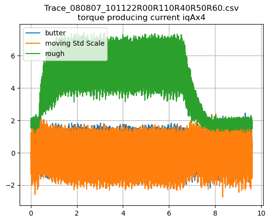
Fast Fourier Transformation (FFT)
Over the moving standard scalar value, the FFT was applied. Since the static components were eliminated, the the FFT has two significant peaks. The first one at aprox. \(35Hz\) and the \(105Hz\). \(35Hz\) corresponds to the rotational speed and \(105Hz\) is a multiple of the spindle speed and corresponds to the 3 cutting edges used. Doing the FFT over the complete time series gives the relevant information about significant frequencies. However, a FFT over a defined number of samples can lead to more information about when the material removing process starts and ends. To identify the amplitudes of the cutting signals, this is an important indicator.
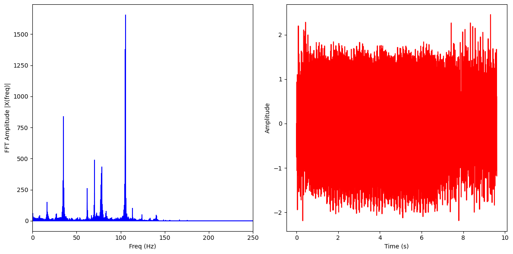For this reason, the next step is to divide the time series in time windows and calculate the FFT again for each window. By doing this, one obtains a “moving FFT” with corresponding information.
Window FFT (wFFT)
For the wFFT, the same function was used as for the complete FFT. The algorithm starts evaluating the first N samples (\(1....N\)) and calculates the FFT over these signals. In the next step, it takes the values form \(2...N+1\) and so on. Fig ? the results. For illustrative purposes, only some wFFTs are ploted (each 1000 times in this case.) What can be noticed that both frequencies are always dominant. The the frequency at \(105Hz\), however, increases significantly when the material removing process starts and decreases a when finished
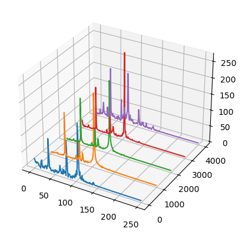
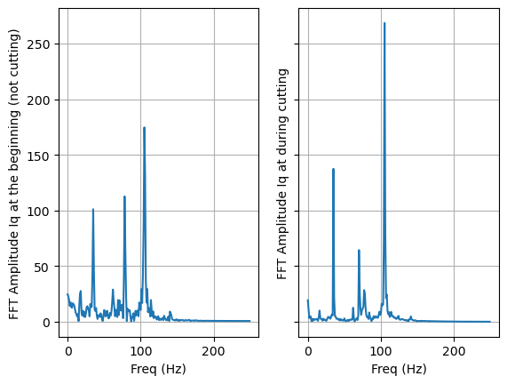
Model: Gibbs Sampler (Jags model)
As a first approach to find reasonable values for \(m_c\) and \(k_{c,11}\) a gibbs sampler using jags was implemented using as input the maximal values of
\[ \hat{M_c} = \sum_1^z{F_{ci} r_{tool}}=a_p f_z^{1-m_c} sin(\kappa)^{m_c} k_{c1.1} \]
\[ \tau \sim \gamma(0.1,0.1) \]
\[ \hat{M_c} \sim dnorm(predict[i], \tau) \]
\[ log(𝑝𝑟𝑒𝑑[𝑖])= log(a_p) + (1 − 𝑚_𝑐)∗ log(𝑓_𝑧) + (1−𝑚_𝑐)∗log(sin(𝜅)) +log(𝑘_{𝑐11}) +log( 𝑟_{𝑡𝑜𝑜𝑙}) \]
Model: Gibbs Sampler (Jags model)
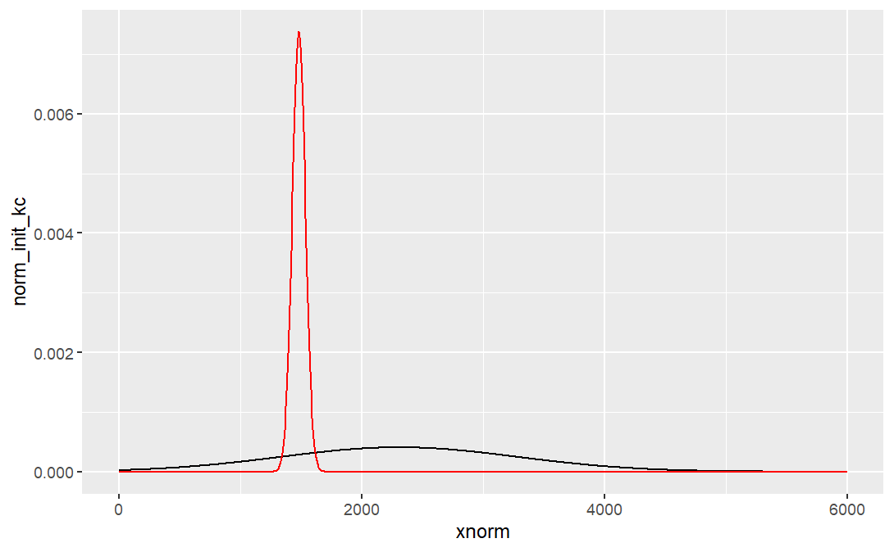
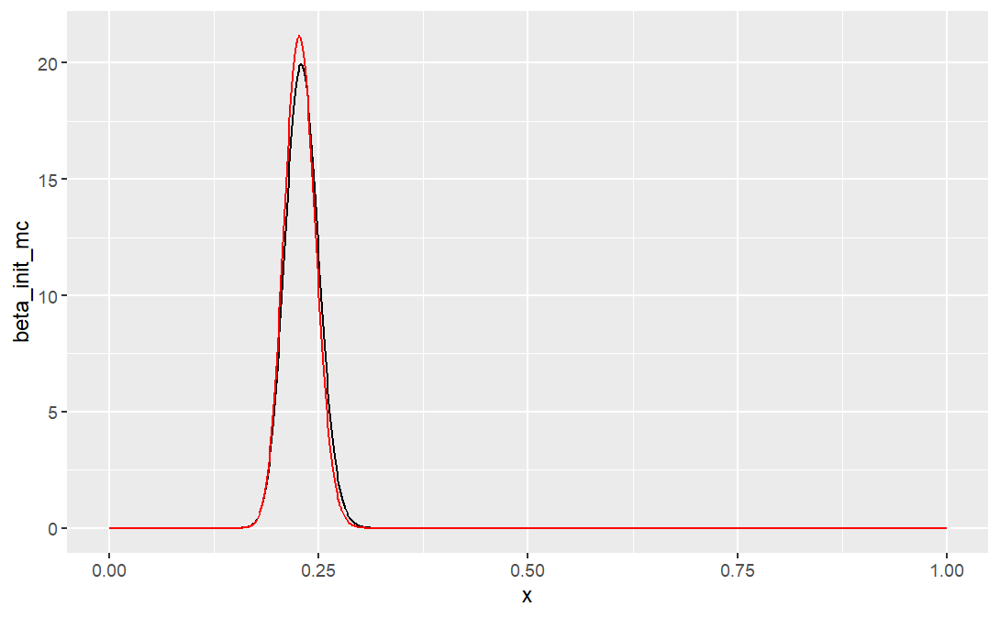
The first results for \(𝑘_{𝑐11}\) as normal distribution with mean at 1481 MPa and standard deviation at 54 MPa are close to the expected values., and the \(𝑚_𝑐\) was simulated as beta distribution with 𝛼=112.61 , 𝛽=382.14 (equiv. to mean value at 0.22 and std at 0.018) which also represents a good results. The value of deviance is relatively high with \(8268.584\). This value is an indicator for the stability of the model using the identified values.
Insights and Conclusions
Data Reduction Benefits: The exploration of reducing the frequency and number of variables for information recording can lead to significant improvements in processing efficiency. By simplifying the dataset, we can enhance computational performance and reduce noise, allowing for more accurate modeling and clearer insights.
Model Complexity and Performance: While the Gibbs Sampler (JAGS model) has produced promising expected values, the complexity of the model can lead to challenges in interpretability and stability. Simplifying the model structure or using fewer variables may not only help reduce deviance but also improve convergence rates and make the results more robust.
References
Adaptive loggingmodule formonitoringapplicationsusingcontrol internaldigital drive signalsC. Brecher, T. Rudolf, 2009, ProductionEngineering3, 305-312
Signalvorverarbeitung zur Anwendung steuerungsintegrierter ProzessüberwachungC.Brecher, T Rudolf , wt-online, 2009, S. 479-486
Fundamentals of Modern Manufacturing; M. P. Groover, John Wiley & Sons, Inc. 2002
Werkzeugmaschinen 3 Mechatronische Systeme, Vorschubantriebe, Prozessdiagnose M. Weck, C. Brecher; Springer, 2006
JAGS Version4.3.0 usermanual, https://people.stat.sc.edu/hansont/stat740/jags_user_manual.pdf
Regresión Avanzada (con enfoque Bayesiano); L. E. Nieto Barajas, Scriptum maetriaen Ciencias de Datos, ITAM

Minería y Análisis de Datos